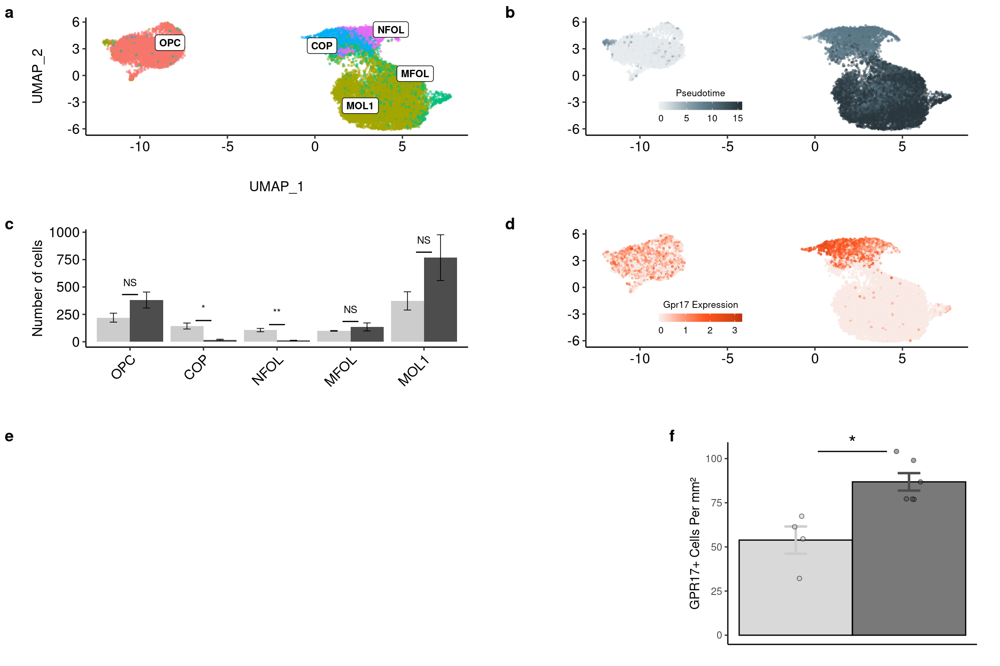

Olig Pseudotime
Last updated: 2019-10-28
Checks: 6 1
Knit directory: fgf_alldata/
This reproducible R Markdown analysis was created with workflowr (version 1.4.0). The Checks tab describes the reproducibility checks that were applied when the results were created. The Past versions tab lists the development history.
Great! Since the R Markdown file has been committed to the Git repository, you know the exact version of the code that produced these results.
The global environment had objects present when the code in the R Markdown file was run. These objects can affect the analysis in your R Markdown file in unknown ways. For reproduciblity it’s best to always run the code in an empty environment. Use wflow_publish or wflow_build to ensure that the code is always run in an empty environment.
The following objects were defined in the global environment when these results were created:
| Name | Class | Size |
|---|---|---|
| data | environment | 56 bytes |
| env | environment | 56 bytes |
The command set.seed(20191021) was run prior to running the code in the R Markdown file. Setting a seed ensures that any results that rely on randomness, e.g. subsampling or permutations, are reproducible.
Great job! Recording the operating system, R version, and package versions is critical for reproducibility.
Nice! There were no cached chunks for this analysis, so you can be confident that you successfully produced the results during this run.
Great job! Using relative paths to the files within your workflowr project makes it easier to run your code on other machines.
Great! You are using Git for version control. Tracking code development and connecting the code version to the results is critical for reproducibility. The version displayed above was the version of the Git repository at the time these results were generated.
Note that you need to be careful to ensure that all relevant files for the analysis have been committed to Git prior to generating the results (you can use wflow_publish or wflow_git_commit). workflowr only checks the R Markdown file, but you know if there are other scripts or data files that it depends on. Below is the status of the Git repository when the results were generated:
Ignored files:
Ignored: .Rproj.user/
Ignored: test_files/
Untracked files:
Untracked: code/sc_functions.R
Untracked: data/fgf_filtered_nuclei.RDS
Untracked: data/filtglia.RDS
Untracked: data/glia/
Untracked: data/lps1.txt
Untracked: data/mcao1.txt
Untracked: data/mcao_d3.txt
Untracked: data/mcaod7.txt
Untracked: data/neur_astro_induce.xlsx
Untracked: data/neuron/
Untracked: data/synaptic_activity_induced.xlsx
Untracked: dge_resample.pdf
Untracked: docs/figure/10_wc_pseudobulk.Rmd/
Untracked: docs/figure/11_wc_astro_wgcna.Rmd/
Untracked: docs/figure/12_oligo_labeltransfer.Rmd/
Untracked: docs/figure/14_tanycyte_labeltransfer.Rmd/
Untracked: docs/figure/9_wc_processing.Rmd/
Untracked: gotermdown.pdf
Untracked: gotermup.pdf
Untracked: olig_ttest_padj.csv
Untracked: output/agrp_pcgenes.csv
Untracked: output/all_wc_markers.csv
Untracked: output/allglia_wgcna_genemodules.csv
Untracked: output/glia/
Untracked: output/glial_markergenes.csv
Untracked: output/integrated_all_markergenes.csv
Untracked: output/integrated_neuronmarkers.csv
Untracked: output/neuron/
Untracked: wc_de.pdf
Note that any generated files, e.g. HTML, png, CSS, etc., are not included in this status report because it is ok for generated content to have uncommitted changes.
There are no past versions. Publish this analysis with wflow_publish() to start tracking its development.
library(here)here() starts at /nfsdata/projects/dylan/fgf_alldatalibrary(Seurat)
library(monocle)Loading required package: MatrixLoading required package: BiobaseLoading required package: BiocGenericsLoading required package: parallel
Attaching package: 'BiocGenerics'The following objects are masked from 'package:parallel':
clusterApply, clusterApplyLB, clusterCall, clusterEvalQ,
clusterExport, clusterMap, parApply, parCapply, parLapply,
parLapplyLB, parRapply, parSapply, parSapplyLBThe following objects are masked from 'package:Matrix':
colMeans, colSums, rowMeans, rowSums, whichThe following objects are masked from 'package:stats':
IQR, mad, sd, var, xtabsThe following objects are masked from 'package:base':
anyDuplicated, append, as.data.frame, basename, cbind,
colMeans, colnames, colSums, dirname, do.call, duplicated,
eval, evalq, Filter, Find, get, grep, grepl, intersect,
is.unsorted, lapply, lengths, Map, mapply, match, mget, order,
paste, pmax, pmax.int, pmin, pmin.int, Position, rank, rbind,
Reduce, rowMeans, rownames, rowSums, sapply, setdiff, sort,
table, tapply, union, unique, unsplit, which, which.max,
which.minWelcome to Bioconductor
Vignettes contain introductory material; view with
'browseVignettes()'. To cite Bioconductor, see
'citation("Biobase")', and for packages 'citation("pkgname")'.Loading required package: ggplot2Loading required package: VGAMLoading required package: stats4Loading required package: splinesLoading required package: DDRTreeLoading required package: irlbalibrary(ggplot2)
library(tidyverse)── Attaching packages ────────────────────────────────── tidyverse 1.2.1 ──✔ tibble 2.1.3 ✔ purrr 0.3.2
✔ tidyr 0.8.3 ✔ dplyr 0.8.3
✔ readr 1.3.1.9000 ✔ stringr 1.4.0
✔ tibble 2.1.3 ✔ forcats 0.4.0 ── Conflicts ───────────────────────────────────── tidyverse_conflicts() ──
✖ dplyr::combine() masks Biobase::combine(), BiocGenerics::combine()
✖ tidyr::expand() masks Matrix::expand()
✖ tidyr::fill() masks VGAM::fill()
✖ dplyr::filter() masks stats::filter()
✖ dplyr::lag() masks stats::lag()
✖ ggplot2::Position() masks BiocGenerics::Position(), base::Position()library(rstatix)
Attaching package: 'rstatix'The following object is masked from 'package:stats':
filterlibrary(ggpubr)Loading required package: magrittr
Attaching package: 'magrittr'The following object is masked from 'package:purrr':
set_namesThe following object is masked from 'package:tidyr':
extractlibrary(ggsci)
library(ggrepel)
library(reshape2)
Attaching package: 'reshape2'The following object is masked from 'package:tidyr':
smithslibrary(cowplot)
********************************************************Note: As of version 1.0.0, cowplot does not change the default ggplot2 theme anymore. To recover the previous behavior, execute:
theme_set(theme_cowplot())********************************************************
Attaching package: 'cowplot'The following object is masked from 'package:ggpubr':
get_legendlibrary(ggpubr)olig <- readRDS(here("data/glia/olig_labeled.RDS"))
olig_plot <- as.data.frame(Embeddings(olig, reduction = "umap"))
olig_plot$trt <- olig$trt
olig_plot$type <- Idents(olig)
label.df <- data.frame(cluster=levels(olig_plot$type),label=levels(olig_plot$type))
label.df_2 <- olig_plot %>%
dplyr::group_by(type) %>%
dplyr::summarize(x = median(UMAP_1), y = median(UMAP_2))
a <- ggplot(olig_plot, aes(UMAP_1, UMAP_2, colour = trt)) +
geom_point(alpha = 0.5, size=.5) + scale_color_manual(values=c("#000000","#999999"), name="") +
guides(colour = guide_legend(override.aes = list(size=2))) + theme_pubr() + theme(legend.position = c(0.3, 0.25), legend.background=element_blank())
b <- ggplot(olig_plot, aes(UMAP_1, UMAP_2, colour = type)) +
geom_point(alpha = 0.5, size=.5) + scale_colour_discrete(name="Treatment") +
geom_label_repel(data = label.df_2, aes(label = type, x=x, y=y), size=3, fontface="bold", inherit.aes = F) +
guides(colour = guide_legend(override.aes = list(size=5))) + theme_pubr() + theme(legend.position = "none") summarySE <- function(data=NULL, measurevar, groupvars=NULL, na.rm=FALSE,
conf.interval=.95, .drop=TRUE) {
library(plyr)
# New version of length which can handle NA's: if na.rm==T, don't count them
length2 <- function (x, na.rm=FALSE) {
if (na.rm) sum(!is.na(x))
else length(x)
}
# This does the summary. For each group's data frame, return a vector with
# N, mean, and sd
datac <- ddply(data, groupvars, .drop=.drop,
.fun = function(xx, col) {
c(N = length2(xx[[col]], na.rm=na.rm),
mean = mean (xx[[col]], na.rm=na.rm),
sd = sd (xx[[col]], na.rm=na.rm)
)
},
measurevar
)
# Rename the "mean" column
names(datac)[4] <- measurevar
datac$se <- datac$sd / sqrt(datac$N) # Calculate standard error of the mean
# Confidence interval multiplier for standard error
# Calculate t-statistic for confidence interval:
# e.g., if conf.interval is .95, use .975 (above/below), and use df=N-1
ciMult <- qt(conf.interval/2 + .5, datac$N-1)
datac$ci <- datac$se * ciMult
return(datac)
}cell<-as.data.frame.matrix(table(olig$orig.ident, olig@active.ident))
cell$trt<-as.factor(sapply(strsplit(rownames(cell),"_"),"[",2))
cell<-melt(cell)
stat.test <- cell %>%
group_by(variable) %>%
t_test(value ~ trt) %>%
adjust_pvalue() %>%
add_significance("p.adj")Warning: `set_attrs()` is deprecated as of rlang 0.3.0
This warning is displayed once per session.cell<-summarySE(cell, measurevar="value", groupvars=c("trt","variable"))
plotval<-cbind(cell, signif=stat.test$p.adj.signif)
plotval$signif[plotval$trt!="FGF1"]<-NA
write.csv(plotval, file="olig_ttest_padj.csv")
c <- ggplot(plotval, aes(x = variable, y = value, fill = trt, label = signif)) +
geom_bar(position=position_dodge(), stat="identity") + geom_text(aes(y = c(500,1200,300,250,200, NA,NA,NA,NA,NA))) +
geom_errorbar(aes(ymin=value-se, ymax=value+se),size=.3,width=.2,position=position_dodge(.9)) +
xlab(NULL) + scale_fill_manual(values=c("#000000","#999999")) +
ylab("Mean Number\n of Cells") +
theme_pubr(legend = "none") +
theme(axis.text.x = element_text(angle=45, hjust=1))top <- plot_grid(b, a, c, scale=0.9, labels = "AUTO", nrow = 1, rel_widths = c(1,1,1.25), align="h", axis="tb")Warning: Removed 5 rows containing missing values (geom_text).top
cds <- as.CellDataSet(olig)
cds <- estimateSizeFactors(cds)
cds <- estimateDispersions(cds)
cds <- detectGenes(cds, min_expr = 0.1)
fData(cds)$use_for_ordering <-
fData(cds)$num_cells_expressed > 0.1 * ncol(cds)cds <- reduceDimension(cds,
max_components = 2,
norm_method = 'log',
num_dim = 2,
reduction_method = 'tSNE',
verbose = T)
cds <- clusterCells(cds, verbose = T)Distance cutoff calculated to 7.253532 cds <- clusterCells(cds,
rho_threshold = 150,
delta_threshold = 15,
skip_rho_sigma = T,
verbose = F)
plot_cell_clusters(cds, label_groups_by_cluster=FALSE, color_cells_by = "Cluster")
olig_expressed_genes <- row.names(subset(fData(cds), num_cells_expressed >= 10))
clustering_DEG_genes <-
differentialGeneTest(cds[olig_expressed_genes,],
fullModelFormulaStr = '~predicted.id',
cores = 10)
olig_ordering_genes <-
row.names(clustering_DEG_genes)[order(clustering_DEG_genes$qval)][1:500]
cds <-
setOrderingFilter(cds,
ordering_genes = olig_ordering_genes)
cds <-
reduceDimension(cds, method = 'DDRTree')
cds <-
orderCells(cds)
cds <-
orderCells(cds, root_state = 2)
olig$pseudo <- cds$Pseudotime
plot_cell_trajectory(cds,color_by = "predicted.id")
lib_info_with_pseudo <- pData(cds)
t(monocle::reducedDimS(cds)) %>%
as.data.frame() %>%
select_(data_dim_1 = 1, data_dim_2 = 2) %>%
rownames_to_column("sample_name") %>%
mutate(sample_state) %>%
left_join(lib_info_with_pseudo %>% rownames_to_column("sample_name"), by = "sample_name") %>%
arrange(Pseudotime) -> data_dfWarning: select_() is deprecated.
Please use select() instead
The 'programming' vignette or the tidyeval book can help you
to program with select() : https://tidyeval.tidyverse.org
This warning is displayed once per session.reduced_dim_coords <- reducedDimK(cds)
pseudo <- ggplot(data_df, aes(x=data_dim_1, y=data_dim_2, colour=Pseudotime)) +
geom_point(size=0.5) +
geom_point(data = data.frame(t(cds@reducedDimK)), aes(X1, X2), inherit.aes = F, size=0.2) +
xlab("Dim 1") + ylab("Dim 2") +
theme_pubr(legend="right") + facet_wrap(.~trt)plot_grid(top, pseudo, ncol=1, labels = c("", "D"))
detach("package:here", unload = T)
library(here)
save.image(file = here("data/glia/olig_alldata.RData"))
sessionInfo()R version 3.5.3 (2019-03-11)
Platform: x86_64-pc-linux-gnu (64-bit)
Running under: Storage
Matrix products: default
BLAS/LAPACK: /usr/lib64/libopenblas-r0.3.3.so
locale:
[1] LC_CTYPE=en_DK.UTF-8 LC_NUMERIC=C
[3] LC_TIME=en_DK.UTF-8 LC_COLLATE=en_DK.UTF-8
[5] LC_MONETARY=en_DK.UTF-8 LC_MESSAGES=en_DK.UTF-8
[7] LC_PAPER=en_DK.UTF-8 LC_NAME=C
[9] LC_ADDRESS=C LC_TELEPHONE=C
[11] LC_MEASUREMENT=en_DK.UTF-8 LC_IDENTIFICATION=C
attached base packages:
[1] splines stats4 parallel stats graphics grDevices utils
[8] datasets methods base
other attached packages:
[1] here_0.1 plyr_1.8.4 cowplot_1.0.0
[4] reshape2_1.4.3 ggrepel_0.8.1 ggsci_2.9
[7] ggpubr_0.2.1 magrittr_1.5 rstatix_0.1.1
[10] forcats_0.4.0 stringr_1.4.0 dplyr_0.8.3
[13] purrr_0.3.2 readr_1.3.1.9000 tidyr_0.8.3
[16] tibble_2.1.3 tidyverse_1.2.1 monocle_2.10.1
[19] DDRTree_0.1.5 irlba_2.3.3 VGAM_1.1-1
[22] ggplot2_3.2.1 Biobase_2.42.0 BiocGenerics_0.28.0
[25] Matrix_1.2-17 Seurat_3.0.3.9036
loaded via a namespace (and not attached):
[1] readxl_1.3.1 backports_1.1.4 workflowr_1.4.0
[4] igraph_1.2.4.1 lazyeval_0.2.2 densityClust_0.3
[7] listenv_0.7.0 fastICA_1.2-1 digest_0.6.20
[10] htmltools_0.3.6 viridis_0.5.1 gdata_2.18.0
[13] cluster_2.1.0 ROCR_1.0-7 openxlsx_4.1.0.1
[16] limma_3.38.3 globals_0.12.4 modelr_0.1.4
[19] RcppParallel_4.4.3 matrixStats_0.54.0 R.utils_2.9.0
[22] docopt_0.6.1 colorspace_1.4-1 rvest_0.3.4
[25] haven_2.1.0 xfun_0.8 sparsesvd_0.1-4
[28] crayon_1.3.4 jsonlite_1.6 zeallot_0.1.0
[31] survival_2.44-1.1 zoo_1.8-6 ape_5.3
[34] glue_1.3.1 gtable_0.3.0 leiden_0.3.1
[37] car_3.0-3 future.apply_1.3.0 abind_1.4-5
[40] scales_1.0.0 pheatmap_1.0.12 bibtex_0.4.2
[43] Rcpp_1.0.2 metap_1.1 viridisLite_0.3.0
[46] reticulate_1.13 proxy_0.4-23 foreign_0.8-71
[49] rsvd_1.0.2 SDMTools_1.1-221.1 tsne_0.1-3
[52] htmlwidgets_1.3 httr_1.4.1 FNN_1.1.3
[55] gplots_3.0.1.1 RColorBrewer_1.1-2 ica_1.0-2
[58] pkgconfig_2.0.2 R.methodsS3_1.7.1 uwot_0.1.3
[61] labeling_0.3 tidyselect_0.2.5 rlang_0.4.0
[64] munsell_0.5.0 cellranger_1.1.0 tools_3.5.3
[67] cli_1.1.0 generics_0.0.2 broom_0.5.2
[70] ggridges_0.5.1 evaluate_0.14 yaml_2.2.0
[73] npsurv_0.4-0 knitr_1.23 fs_1.3.1
[76] fitdistrplus_1.0-14 zip_2.0.3 caTools_1.17.1.2
[79] RANN_2.6.1 pbapply_1.4-1 future_1.14.0
[82] nlme_3.1-140 slam_0.1-45 R.oo_1.22.0
[85] xml2_1.2.0 compiler_3.5.3 rstudioapi_0.10
[88] curl_4.0 plotly_4.9.0 png_0.1-7
[91] ggsignif_0.5.0 lsei_1.2-0 stringi_1.4.3
[94] highr_0.8 lattice_0.20-38 HSMMSingleCell_1.2.0
[97] vctrs_0.2.0 pillar_1.4.2 combinat_0.0-8
[100] Rdpack_0.11-0 lmtest_0.9-37 RcppAnnoy_0.0.12
[103] data.table_1.12.2 bitops_1.0-6 gbRd_0.4-11
[106] R6_2.4.0 rio_0.5.16 KernSmooth_2.23-15
[109] gridExtra_2.3 codetools_0.2-16 MASS_7.3-51.4
[112] gtools_3.8.1 assertthat_0.2.1 rprojroot_1.3-2
[115] withr_2.1.2 qlcMatrix_0.9.7 sctransform_0.2.0
[118] hms_0.5.0 grid_3.5.3 rmarkdown_1.13
[121] carData_3.0-2 Rtsne_0.15 git2r_0.25.2
[124] lubridate_1.7.4